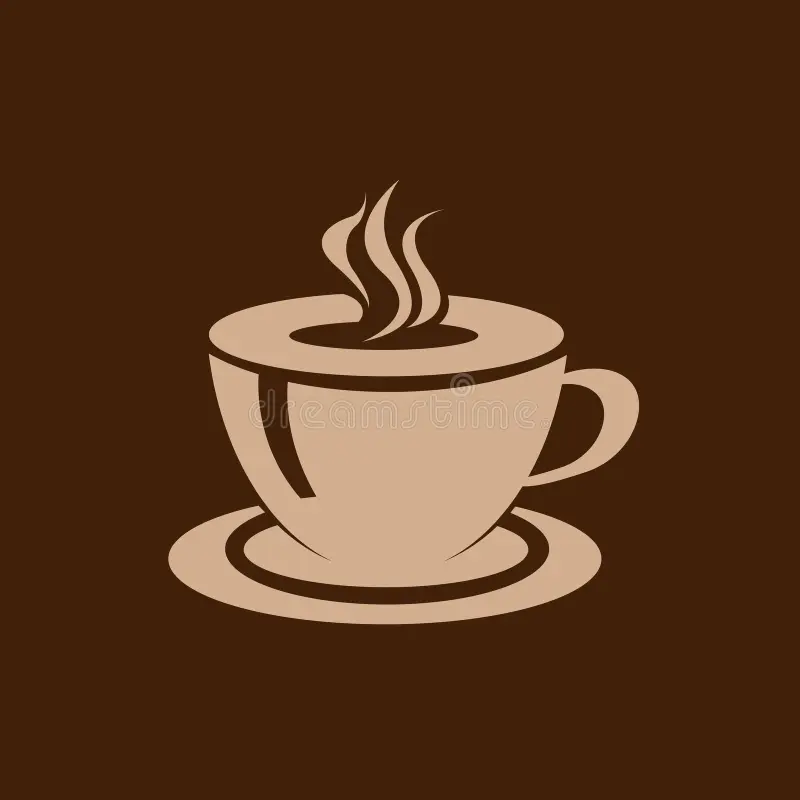
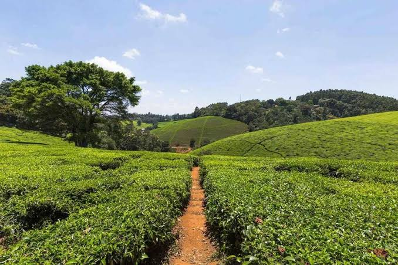

Rooted in the Green Hills Green Hill Coffee Plantation is a family-owned coffee estate nestled in the misty highlands just outside Nairobi. For over three decades, we've tended the same rich, volcanic soil our grandparents farmed. We don't just grow coffee. We nurture it. From seedling to harvest, every bean is hand-tended, sun-dried, and sorted with care. We believe great coffee shouldn't be rushed. It should be respected — for the land, the farmer, and the person who drinks it. We are farmers, roasters, and coffee lovers. And now, we're inviting you to our table. WHAT WE DO / OUR SERVICES More Than Just a Farm 1. Farm-to-Cup Coffee Production We control the entire journey. Grown, harvested, washed, and sun-dried right here at Green Hill to preserve flavor and quality. 2. Small-Batch Roasting We roast in small batches weekly at our estate roastery. No warehouse stock, no stale beans. Just fresh roast with roast dates on every bag. 3. Plantation Tours & Tasting Come walk the hills. We host guided tours every Saturday — walk the farm, learn to pick and process, and end with a guided cupping session of our best lots. Location: Green Hill, Kiambu Road | Booking required 4. Wholesale & Private Label for Cafes, Hotels & Offices Supplying Nairobi's best cafes and offices with consistent, premium Kenyan coffee. We offer custom grind, private labeling, and barista training for our partners. OUR PRODUCTS Taste the Hillside 1. Green Hill House Blend - Our Signature Medium roast, smooth & balanced. Notes of chocolate, caramel and citrus. Perfect for your daily brew. Available as Beans / Ground - 250g, 500g, 1kg 2. Single Origin AA Kenya's finest grade. Bright, full-bodied with blackcurrant and wine notes. For the true connoisseur. 3. Peaberry Reserve Rare and limited. Our most prized small beans, intensely flavorful with a sweet, clean finish. 4. Cold Brew & Drip Bags Same great coffee, made easy. Barista-quality cold brew concentrate and single-serve drip bags for home and office. All products are available online and at the farm shop. WHY GREEN HILL? Why Our Coffee Tastes Different 100% Kenyan, 100% Traceable: One farm. One family. No middlemen. Sustainably Grown: We use regenerative farming, natural compost, and conserve water. Our shade trees protect the birds that protect our crop. Fair to Our People: We pay above fair-trade wages and invest in our community schools. Roasted Fresh, Not Stored: We roast to order. Your coffee was a green bean last week.
